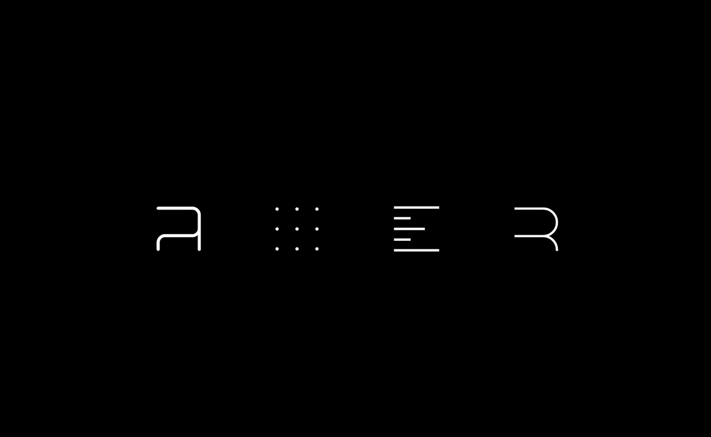
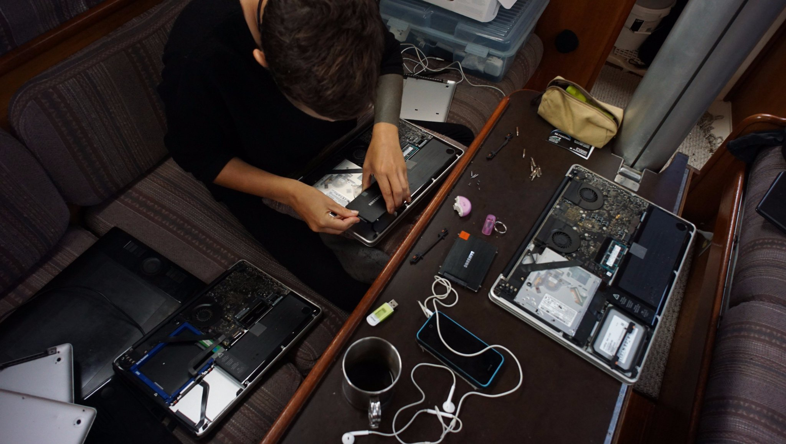

Tools ecosystem
- Our tools
- What is the hundredrabbits tools ecosystem?
- A story of repeated failures.
- The solution.
- What's next?
- Resources
Our tools
How did the Hundredrabbits ecosystem come into being? It's a long story, but here's a summary.
What is the hundredrabbits tools ecosystem?
It is a set of tools that we made, and that we use on a daily basis to do art, music and writing.
- ORCA, an experimental live-coding environment.
- Dotgrid, a simple vector line tool
- Left, a simple minimalist text editor.
- Ronin, a graphic design terminal
A story of repeated failures.
In 2016, we left Canada, armed with our two iPhones and 2 MacBooks Pros. These, we thought, would do well enough off-grid. In the event that they didn't? Well. "We'll just add more solar!" Yes I know, sorry, we're from Gen Y, we don't know shit about electricity — something to do with electrons? We didn't know the wattage of any of the devices we owned, and even less about the amount of solar needed to power them. In our defense, when living on land, not many people pay attention to how many amps their devices draw daily, because electricity feels limitless, forever free-flowing and available everyday, all day.
Before we left to sail offshore, we were connected to the grid most times. We'd go to a marina with Pino, a few days every week, the rest of the time we'd be at anchor. Because life on the hook was new to us, we weren't working as much, the pull of the outdoors was too great. Our working hours were reserved for the marina, where we had both power and internet. This was a fine setup, we thought, but, there was problem: we never spent enough time working at anchor, to fully test our current power setup off-grid. If we had spent a month or so away from civilization, we would have learnt that we had to change something. And so, to continue with the story, we left Canada and cruised down the coast of the US. We alternated between staying in a marina and staying at anchor, the longest we spent at anchor during that time was 3 weeks in San Francisco. We were anchored off Treasure Island. We quickly discovered that working aboard at anchor, running two macbook pros, a refrigerator and our phones was not possible. We turned our fridge off at night, and would take trips into town during the day to work from cafes to save on power. SF was grey on most days, so our solar was not drawing as much as it could have. Going to work from cafes in town worked well enough for us, most had outlets we could use. We worked in the mornings in cafes downtown, and wandered around in the afternoons, exploring our neighborhood of the moment. We could return before dark, so we could turn the fridge off, doing this though, we discovered, made little sense. The food in the refrigerator started to rot quicker, because the temperature was not cool and constant, the warming of that space made our organic food perspire. As you know, wetness accelerates rot and the growth of mold. We started to keep the fridge off while at anchor, turning it off and on was not worth it.
We experienced extended time at anchor again in San Diego, but a marina in Ensenada offered some respite. The timing was impeccable, because my Macbook started having logic board issues. We had few options for repair at the time, and we couldn't afford to replace it. We had a Chromebook aboard Pino, a laptop we bought to use as a media station; since we were a laptop short, Devine decided to try and use ChromeOS for development. During this transition, Devine developed the first version of Ronin. I didn't have Photoshop to work with, and for a while we wondered if we could fashion a replacement for it ourselves. Can't be that hard, we thought! As it turns out, it is not impossible, but it's not easy either. The early version of Ronin was functional, but it couldn't serve as a replacement for Photoshop, not yet.

A charitable soul heard about our problems and sent me an old disused 17" Macbook, I could use in the meantime, while we worked at improving Ronin. During this time, we sailed around Baja California and over to La Paz in the Sea of Cortez. The marinas in La Paz were full-up because of the Baja Haha, a yearly regatta of boats that travel from the US to Mexico. It's around this time that we started to live at anchor full time. We were anchored off of La Paz, in the main anchorage, a short dinghy ride away from the shore. This new setup worked for a while, but my new-to-me laptop was a beast of a computer, drawing ~8ah per hour. We couldn't work from Pino, we had to seek outside assistance in the form of a coffee shop. This worked in most places we'd been so far, but in La Paz, we found no cafe with outlets and internet. Around that time, we got a gas generator — not the greenest of options. It was the only way we'd found to keep working aboard Pino, to keep our batteries topped up.
This combined with our engine's alternator worked for us. But then, as months passed, we experienced frequent failures with our devices and apps. Most times, I could not charge my laptop up fully, which means that it drew a LOT of power, all the time. On a laptop, the last few percentage points are much lower wattage to float/top it off, but, I never really got there with my Mac. To make matters worse, the laptop's battery stopped holding a charge, making it impossible to use. Had I had been working alone, I could have managed, but Devine needed to get some work done too, on a computer that draws about as much (at least, the battery had no issues).
Our house batteries and solar couldn't keep up with these monsters. I could only use my computer when the sun was highest in the sky, for short periods of time. It proved to be impractical. I could not use Photoshop, and Devine couldn't use Xcode, two softwares we were depending on to get things done, to make our games. Our generator was a big help, but we didn't want to run it all the time. In Mexico, we ran it every couple of days, ignoring the sound, smell and vibration – not an ideal situation.
When we left Mexico for French Polynesia, we started to have other 'work-related' issues. Devine couldn't run X code because we couldn't keep up with the constant updates, which were sizable. Our bandwidth was limited then, we were relying on very slow island internet. Downlading updates to Xcode, which could be 5-10G at times, was impossible.
We had no internet on the boat, if we wanted to do anything online we had to take the dinghy to shore to work from an outdoor cafe. This place had bananas hanging from the ceiling, the air was thick with flies and the was floor covered in sleeping hounds. The internet connection was slow, faster in the morning, when there were less people around using it, but still damn slow. One morning, Devine was there, struggling to update Xcode again, discouraged. Across the table sat another person, looking very tired, and annoyed. This, was Herbert.

Herbert, sweat at his brow, glared at the screen of his laptop. Devine sat across from him, beads of sweat trickling down as the speed of the internet slowed to a painful crawl. They sat there together, unaware that they shared a problem. Herbert, was a developer/sailor too, and was trying to download the same updates to Xcode. Both bonded over this struggle, which persisted throughout the South Pacific.
One night in Tahiti, we were sitting on deck, watching the Island of Moorea in the distance. We talked about expectations versus reality, and began to make a list of things we could improve on. I wasn't working much, due to my laptop's faulty battery, but this wasn't all bad... it allowed for more swimming, and to dive back into former interests, like writing. I began to write more during that time, using the Chromebook because it was low-power. The Chromebook only had Caret as a writing tool, and Devine wasn't having it! "Naw, that's no good, I'll make you a simple tool you can use to write with." The next day, Devine was hard at work making a minimalist writing tool for me. This is how Left came into being, out of necessity.
When we arrived in New Zealand, even if we were near a big city, with resources, we still didn't have access to power. We would have to continue to rely completely on solar. We invested in Raspberry Pi hardware, to replace the ChromeBook. Our new Pi setup was low-power and low-cost, perfect for writing. I decided to no longer use the 17" Macbook, even with a replacement 3rd-party battery (which also failed us later on). The device was still a crazy power-hungry beast. We couldn't use devices like that on Pino, not anymore. It was at that time that we received yet another disused Macbook to add to our growing collection. This 2010 model was less power-demanding, and would help keep me keep working.
We knew then already, that we didn't want to buy a new-anything from Apple ever again. Combining parts to create a good-working computer was, at the time, our only viable option. We would keep using these laptops, repairing them any way we can until we could find them suitable homes. An estimated 130,000 computers end up in the garbage annually, we didn't want to add to those statistics. Greenhouse emissions in production are far higher than from several years worth of usage by customers. This is why we've been holding off on purchasing new devices (in an attempt at reducing our broader environmental impact). In today's climate, it is far better to re-use, than to buy. After these events, we became aware — and concerned — over our power consumption. Just like how we calculate our water intake with a foot pump (1/4 cup per push), we would start to monitor our power usage, and to try and find ways to lessen it. This, was beneficial to the environment, but also, our situation required it. With limitations comes creativity.
We too, began talking about our vision of the future, about what working on Pino could be like if we could lessen our dependence on software and hardware we couldn't fix ourselves.
As we pushed further and further west with Pino, we accumulated both miles and problems, strengthening our desire to be self-sufficient.
Another downside we discovered, was that many tools and operating software need to call home eventually. It isn't uncommon for an iPhone to lock up, due to a prolonged period of no-internet. Many sailors we met also had that same problem. It's dangerous. Especially considering that many, like us, navigate using their phones. It's how we get our weather and communicate with others. We can view messages and weather downloaded with the SAT phone via an app on our cellphones.
We had a clear view of what we wanted then.
The solution.
We had to adapt, to change our workflow. One big decision, was to scale our projects to the amount of energy we had available on the boat. This translates to shorter work hours and smaller projects (books, music etc).
We also thought it necessary to make our own tools. Tools that work offline, that use little power and that are good at doing one thing (not bloated).
We wanted them to be open-source, so that if something breaks, we can easily fix it. If someone else has an issue, they can also fix the tool themselves.
In an ideal world, we'd also have devices of our own design which follow these same rules. For now though, re-using old Macbooks is a good solution. We are thinking about this a lot, but this requires more resources and planning. This is an insight of what we have planned for the future!

What's next?
Ronin, our graphic design terminal, is almost ready for release, we'll announce it here once it's out. In the meantime, enjoy this concept of these rabbit-like characters that Rekka designed to personify each tool! You'll be seeing a lot more of these guys around~
Resources
- What can a technologist do about climate change?
- Solar Punk: Notes toward a manifesto
- Design life cycle
- The Right to Repair
- Reduction Revolution
- What progress means
- Low tech magazine
If you enjoy our content...
Support Us On Patreon